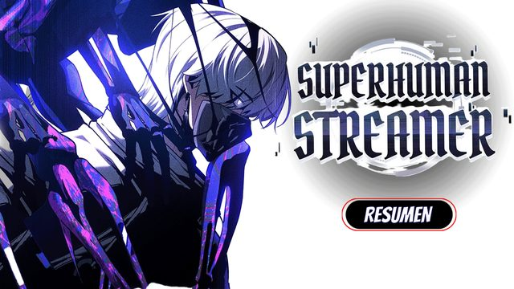
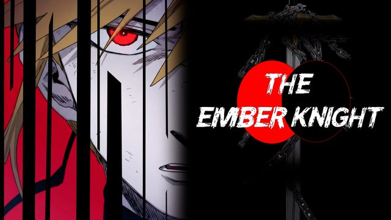
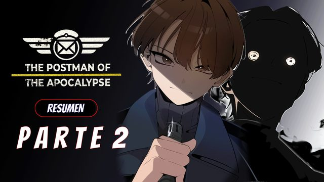
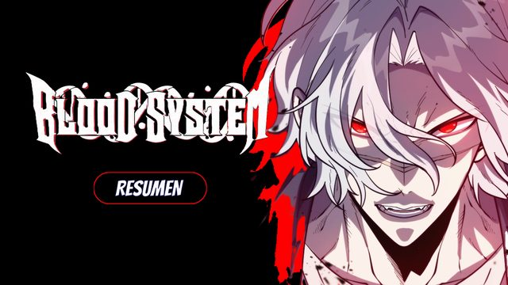

En el canal
Superhuman Streamer
Capítulos publicados: 0-24
Lo que ya salió, lo que está en producción y lo que viene.
Ya publicados. Se ven ahora mismo en YouTube.

Capítulos publicados: 0-24

Capítulos publicados: 1-22

Capítulos publicados: 1-13
Con guion en curso. Salen próximamente.
Un mundo post-apocalíptico lleno de misterios y secretos, nuestro prota sueña con ser un Heroé, pero no tiene el poder para cumplir su sueño hasta que...
En la lista para cubrir más adelante.

Un prota aspirante a héroe y con un código de No matar a personas, termina siendo transformado en todo lo contrario.
Un tipo que trabaja como Freelancer exorcizando esperítus malignos a puñetazos.